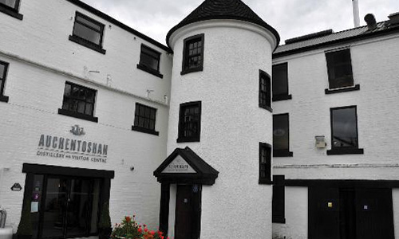
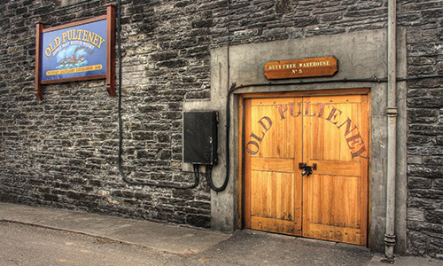
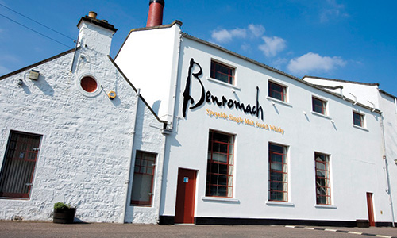
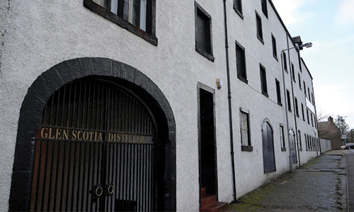
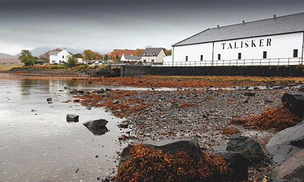
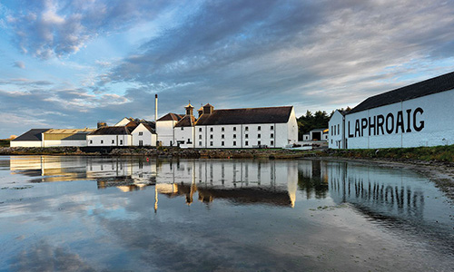

--- 

layout: default

---

<div class="back">
	<p><a href="production.html">BACK</a></p>
</div class="mini-nav">

<h1>Distilleries</h1>

<div class="mini-nav">
	<h2>Lowland</h2>
		<div>
			
		</div>
	<ul>
		<li><a href="http://en.wikipedia.org/wiki/Ailsa_Bay">Ailsa Bay</a></li>
		<li><a href="http://en.wikipedia.org/wiki/Ailsa_Bay">Auchentoshan</a></li>
		<li><a href="http://en.wikipedia.org/wiki/Ailsa_Bay">Bladnoch</a></li>
		<li><a href="http://en.wikipedia.org/wiki/Ailsa_Bay">Daftmill</a></li>
		<li><a href="http://en.wikipedia.org/wiki/Ailsa_Bay">Glenkinchie</a></li>
	</ul>
</div>

<div class="mini-nav">
	<h2>Highlands</h2>
	<div>
		
	</div>
	<ul>
		<li><a href="http://en.wikipedia.org/wiki/Ailsa_Bay">Aberfeldy</a></li>
		<li><a href="http://en.wikipedia.org/wiki/Ailsa_Bay">Ardmore</a></li>
		<li><a href="http://en.wikipedia.org/wiki/Ailsa_Bay">Balblair</a></li>
		<li><a href="http://en.wikipedia.org/wiki/Ailsa_Bay">Ben&nbsp;Nevis</a></li>
		<li><a href="http://en.wikipedia.org/wiki/Ailsa_Bay">Blair&nbsp;Athol</a></li>
		<li><a href="http://en.wikipedia.org/wiki/Ailsa_Bay">Clynelish</a></li>
		<li><a href="http://en.wikipedia.org/wiki/Ailsa_Bay">Dalmore</a></li>
		<li><a href="http://en.wikipedia.org/wiki/Ailsa_Bay">Dalwhinnie</a></li>
		<li><a href="http://en.wikipedia.org/wiki/Ailsa_Bay">Deanston</a></li>
		<li><a href="http://en.wikipedia.org/wiki/Ailsa_Bay">Edradour</a></li>
		<li><a href="http://en.wikipedia.org/wiki/Ailsa_Bay">Fettercairn</a></li>
		<li><a href="http://en.wikipedia.org/wiki/Ailsa_Bay">Glencadam</a></li>
		<li><a href="http://en.wikipedia.org/wiki/Ailsa_Bay">Glen&nbsp;Garioch</a></li>
		<li><a href="http://en.wikipedia.org/wiki/Ailsa_Bay">Glengoyne</a></li>
		<li><a href="http://en.wikipedia.org/wiki/Ailsa_Bay">Glenmorangie</a></li>
		<li><a href="http://en.wikipedia.org/wiki/Ailsa_Bay">Glenturret</a></li>
		<li><a href="http://en.wikipedia.org/wiki/Ailsa_Bay">Loch&nbsp;Lomond</a></li>
		<li><a href="http://en.wikipedia.org/wiki/Ailsa_Bay">Lochnagar</a></li>
		<li><a href="http://en.wikipedia.org/wiki/Ailsa_Bay">Oban</a></li>
		<li><a href="http://en.wikipedia.org/wiki/Ailsa_Bay">Pulteney</a></li>
		<li><a href="http://en.wikipedia.org/wiki/Ailsa_Bay">Speyburn</a></li>
		<li><a href="http://en.wikipedia.org/wiki/Ailsa_Bay">Teaninich</a></li>
		<li><a href="http://en.wikipedia.org/wiki/Ailsa_Bay">Tomatin</a></li>
		<li><a href="http://en.wikipedia.org/wiki/Ailsa_Bay">Tullibardine</a></li>
		<li><a href="http://en.wikipedia.org/wiki/Ailsa_Bay">Wolfburn</a></li>
	</ul>
</div>

<div class="mini-nav">
	<h2>Speyside</h2>
		<div>
			
		</div>
	<ul>
		<li><a href="http://en.wikipedia.org/wiki/Ailsa_Bay">Aberlour</a></li>
		<li><a href="http://en.wikipedia.org/wiki/Ailsa_Bay">Allt-á-Bhainne</a></li>
		<li><a href="http://en.wikipedia.org/wiki/Ailsa_Bay">Auchroisk</a></li>
		<li><a href="http://en.wikipedia.org/wiki/Ailsa_Bay">Aultmore</a></li>
		<li><a href="http://en.wikipedia.org/wiki/Ailsa_Bay">Balvenie</a></li>
		<li><a href="http://en.wikipedia.org/wiki/Ailsa_Bay">BenRiach</a></li>
		<li><a href="http://en.wikipedia.org/wiki/Ailsa_Bay">Benrinnes</a></li>
		<li><a href="http://en.wikipedia.org/wiki/Ailsa_Bay">Benromach</a></li>
		<li><a href="http://en.wikipedia.org/wiki/Ailsa_Bay">Brackla</a></li>
		<li><a href="http://en.wikipedia.org/wiki/Ailsa_Bay">Braeval</a></li>
	</ul>
</div>

<div class="mini-nav">
	<h2>Campbeltown</h2>
		<div>
			
		</div>
	<ul>
		<li><a href="http://en.wikipedia.org/wiki/Ailsa_Bay">Glengyle</a></li>
		<li><a href="http://en.wikipedia.org/wiki/Ailsa_Bay">Glen Scotia</a></li>
		<li><a href="http://en.wikipedia.org/wiki/Ailsa_Bay">Springbank</a></li>
	</ul>
</div>

<div class="mini-nav">
	<h2>Island</h2>
		<div>
			
		</div>
	<ul>
		<li><a href="http://en.wikipedia.org/wiki/Ailsa_Bay">Abhainn Dearg</a></li>
		<li><a href="http://en.wikipedia.org/wiki/Ailsa_Bay">Arran</a></li>
		<li><a href="http://en.wikipedia.org/wiki/Ailsa_Bay">Highland Park</a></li>
		<li><a href="http://en.wikipedia.org/wiki/Ailsa_Bay">Isle of Jura</a></li>
		<li><a href="http://en.wikipedia.org/wiki/Ailsa_Bay">Talisker</a></li>
		<li><a href="http://en.wikipedia.org/wiki/Ailsa_Bay">Tobermory</a></li>
	</ul>
</div>

<div class="mini-nav">
	<h2>Islay</h2>
		<div>
			
		</div>
	<ul>
		<li><a href="http://en.wikipedia.org/wiki/Ailsa_Bay">Ardbeg</a></li>
		<li><a href="http://en.wikipedia.org/wiki/Ailsa_Bay">Bowmore</a></li>
		<li><a href="http://en.wikipedia.org/wiki/Ailsa_Bay">Bruichladdich</a></li>
		<li><a href="http://en.wikipedia.org/wiki/Ailsa_Bay">Bunnahabhain</a></li>
		<li><a href="http://en.wikipedia.org/wiki/Ailsa_Bay">Caol Ila</a></li>
		<li><a href="http://en.wikipedia.org/wiki/Ailsa_Bay">Kilchoman</a></li>
		<li><a href="http://en.wikipedia.org/wiki/Ailsa_Bay">Lagavulin</a></li>
		<li><a href="http://en.wikipedia.org/wiki/Ailsa_Bay">Laphroaig</a></li>
		<li><a href="http://en.wikipedia.org/wiki/Ailsa_Bay">Port Charlotte</a></li>
	</ul>
</div>

 <div>
      <a href="#top"></a>
 </div>